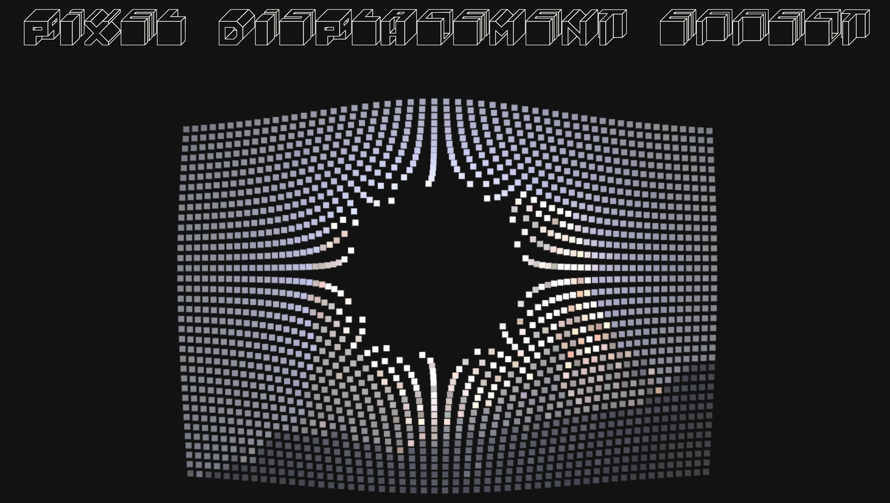

···Week2！···
- On the UI interaction of this site, the first thing you notice is the animation effect that changes with the mouse and the color change caused by sliding the page. I spent the most time on pixel displacement effect during the interactive experience. The effect moves across the surface like water droplets, depending on the mouse.

- In the interactive experience, the most important thing is that the experiencer realizes interaction through the movement of the mouse and clicking on the content of the website. On this basis, the designer realizes interaction with the experiencer through different aspects such as the mentality of the picture and word, the appearance of animation, clicking animation, and color.
- Interactive experiences can be designed to engage users and increase engagement, while enhancing the user experience, promoting user engagement, conveying information, and achieving specific goals. Interactive experiences should communicate how they should interact over time through intuitive design and clear feedback mechanisms. Interactions should be designed to accommodate different user preferences and needs. Some users may prefer short, frequent interactions, while others may prefer a longer, more immersive experience. The key is to provide users with the flexibility and options to engage with the content as they like. Designers customize interactive experiences based on user preferences, behaviors, and past interactions to create more personalized and engaging experiences over time.